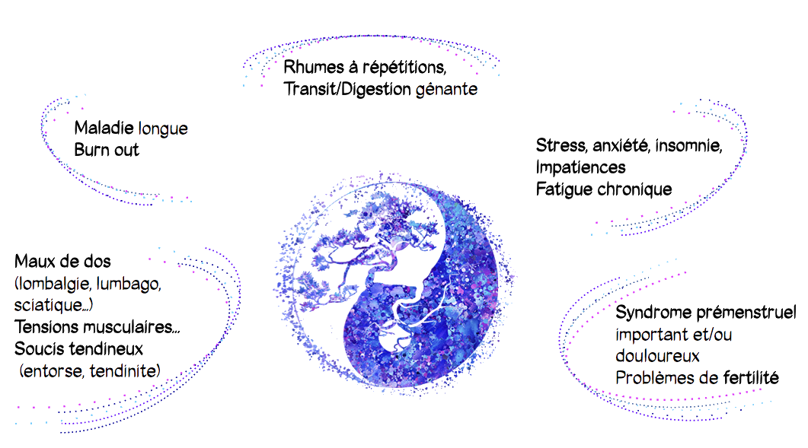

L’acuponcture est l’un des cinq piliers de la médecine traditionnelle chinoise. Elle est pratiquée depuis plus de 3000 ans.
Elle vise à rééquilibrer l’organisme de façon globale et durable en libérant les blocages et en faisant circuler le Qi (l’énergie) et le sang. Pour cela elle se sert des méridiens (canaux d’énergies) présents dans le corps et plus précisément, de points (d’acuponcture) qui sont des nœuds énergétiques qui permettent d’agir sur la circulation de ces énergies.
Le praticien utilise des aiguilles posées sur ces points ou un bâton d’armoise (appelés moxa) pour les chauffer.
La Médecine Chinoise et quelques une de ses applications
